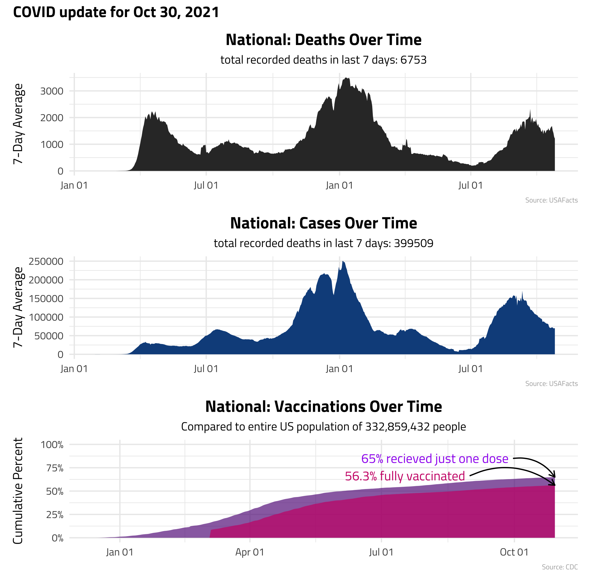

Weekly COVID Email Update
Intro
(TL;DR I created a weekly COVID email update. Scroll to the bottom to opt-in🙂)
I’m excited to talk about this latest project🎉🎉
In the past few days, Europe has seen a third wave of COVID-19 surge through and several other countries are reporting higher cases this week (~10% increase!). All of this begs the question of whether COVID in the U.S. will have a third strong wave after the what we’ve seen from the delta variant and with winter coming. Here is a tweet from the World Health Organization detailing some of this:
"More than 5 million deaths have now been reported, and we know the real number is higher. We are still losing more than 50,000 of our sisters and brothers every week"-@DrTedros #COVID19 pic.twitter.com/5jlX3sYNbH
— World Health Organization (WHO) (@WHO) November 4, 2021
So, Cue In My Project..
Right when I think I don’t have to worry about COVID anymore, I find myself once again clicking through a website checking case, death, and vaccination rates. Instead of this, I created an automated email that sends on Saturday mornings with the latest case/death/vaccination data, so you can be informed with raw data on a weekly check-in basis nationally and for your state.
Email Structure
At the beginning of the email, there are a few lines of text saying whether the case rate is increasing/decreasing/staying about the same and what the national and your state’s vaccination rates are.
Attached to the email are two visualizations showing the data trends across time: one showing national trend, the other showing your state’s trend (they look similar to the figure below 👇)

One note: To get the vaccination rate for each state and nationally, I compared the number vaccinated against the TOTAL population (not just 18+ or 12+). I got the state population numbers from the census, and count is included in the figures for reference. I decided to use the total US population because I think that will eventually be relevant as more age groups are approved for various vaccines. If you are interested in different numbers, I have a link with more information included in the weekly email.
The code is not viewable for this project because of email privacy, but happy to share code snippets for personal inquiries. Thanks for stopping in.
Embedded Survey Form
If you are interested in receiving this brief weekly update, drop your email in below… You can only submit after answering both questions!